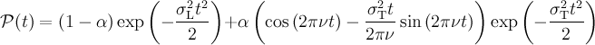
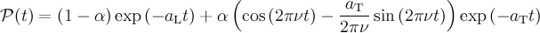
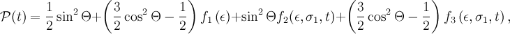
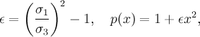
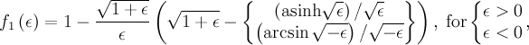
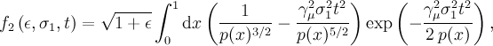
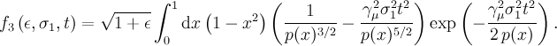

libZFRelaxation
1 Introduction
libZFRelaxation is a collection of C++ classes using the musrfit user-function interface in order to facilitate the usage in conjunction with musrfit. The classes contained in this library implement the calculation of some additional zero-field μSR relaxation functions which are not built-in into musrfit.
In the following the use of the implemented functions is shortly introduced—for details on the applicability and derivation of these functions please refer to the original publications.
If these classes prove useful and results obtained through them are part of scientific publications,
an acknowledgement of the use of the library is appreciated.
2 Isotropic static Gaussian broadened randomly oriented internal fields
E. I. Kornilov and V. Yu. Pomjakushin, Phys. Lett. A 153, 364–367 (1991), doi: 10.1016/0375-9601(91)90959-C
musrfit THEORY-block line: userFcn libZFRelaxation ZFMagGss 1 2 3 4The parameters are:
- the precessing fraction α (= 2/3 in the article),
- the "internal frequency" ν (MHz),
- the "transverse depolarization rate" σT (μs-1),
- the "longitudinal depolarization rate" σL (μs-1) (= 0 in the article).
3 Isotropic static Lorentzian broadened randomly oriented internal fields
M. I. Larkin, Y. Fudamoto, I. M. Gat, A. Kinkhabwala, K. M. Kojima, G. M. Luke, J. Merrin, B. Nachumi, Y. J. Uemura, M. Azuma, T. Saito, and M. Takano, Physica B 289–290, 153–156 (2000), doi: 10.1016/S0921-4526(00)00337-9
musrfit THEORY-block line: userFcn libZFRelaxation ZFMagExp 1 2 3 4The parameters are:
- the precessing fraction α (= 2/3 in the article),
- the "internal frequency" ν (MHz),
- the "transverse depolarization rate" aT (μs-1),
- the "longitudinal depolarization rate" aL (μs-1) (= 0 in the article).
4 Static Gaussian distributed fields with uniaxial anisotropy
G. Solt, Hyperfine Interactions 96, 167–175 (1995), doi: 10.1007/BF02066280
where


and
musrfit THEORY-block line: userFcn libZFRelaxation UniaxialStatGssKT 1 2 3The parameters are:
- σ1 (μs-1),
- σ3 (μs-1),
- Θ (°).
Edit | Attach | Print version | PDF | History: r2 < r1 | Backlinks | View wiki text | Refresh | More topic actions
Topic revision: r2 - 10 Jul 2011, wojek
PSI Webs
System Webs
System Webs
|
|
Ideas, requests, problems regarding PSI Wiki? Send feedback